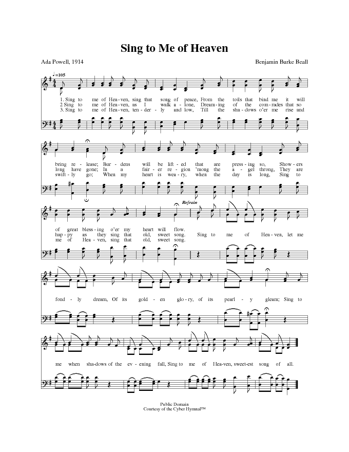

1092 Sing to Me of Heaven _Ada
Powell SE Samonte
|
¡@ |
¡@ |
|
¡@1. Sing to me of Heaven, sing that song of peace,
From the toils that bind me it will bring release;
Burdens will be lifted that are pressing so,
Showers of great blessing o¡¦er my heart will flow.
Refrain
Sing to me of Heaven, let me fondly dream,
Of its golden glory, of its pearly gleam;
Sing to me when shadows of the evening fall,
Sing to me of Heaven, sweetest song of all. 2. Sing to me of Heaven, as I
walk alone,
Dreaming of the comrades that so long have gone;
In a fairer region ¡¦mong the angel throng,
They are happy as they sing that old, sweet song. [Refrain]
3. Sing to me of Heaven, tenderly and low,
Till the shadows o¡¦er me rise and swiftly go;
When my heart is weary, when the day is long,
Sing to me of Heaven, sing that old, sweet song. [Refrain]
Source: The Cyber
Hymnal #6090
|
¡@ |
|
¡@ 
https://hymnary.org/hymn/CYBER/6090 |
|
¡@ |
¡@ |
 Sing to Me of Heaven SE Samonte
Sing to Me of Heaven SE Samonte
¡@Sing to Me of Heaven Acapeldridge
https://www.youtube.com/watch?v=BMeC-hZnhuo
https://www.youtube.com/watch?v=b2be9VfUsGo
¡@
"SING TO ME OF HEAVEN"
"Every several gate was of one pearl; and the street of the city was pure gold" (Rev.
21.21)
INTRO.:
A song which expresses a desire for the place where the gates are pictured as
pearls and the street as gold is "Sing To Me Of Heaven" (#208 in Hymns
for Worship Revised and #444 in Sacred
Selections for the Church). The text was written by Ada Powell (1882-?). No
further information is available on this hymnwriter besides the fact that she¡¦s
written a couple of other songs which have appeared in various hymnbooks used by
churches of Christ, such as "There¡¦s A Crown for Your Cross" and "The Heart
Shall Reap in Joy," both with music by Austin Hazelwood.
The tune (Beall) was composed by Benjamin Burke Beall, who was born on May 25,
1874, in Dallas, GA. Not much information is known about him either, other than
that he graduated in music and elocution from the Texas Musical Institute and
founded B.B. Beall and Co. which published hymnbooks in the early decades of the
twentieth century. Probably his best-known tune is that used with the song "Lift
Him Up," which he published in 1903 with words by Johnson Oatman Jr. Beall
was living at Douglasville, GA, when "Sing to Me of Heaven" was copyrighted in
1914. Its first known appearance in a songbook was apparently in Waves
of Salvation, published at Dalton, GA, in 1922, by Anthony J. Showalter.
Beall died on Oct. 7, 1945, probably at Douglasville.
Among hymnbooks published by members of the Lord¡¦s church during the twentieth
century for use in churches of Christ the song appeared in the 1938 Spiritual
Melodies and the 1943 Standard
Gospel Songs both edited by Tillit S. Teddlie; the 1940 Complete
Christian Hymnal edited by Marion Davis; the 1944 Gospel
Songs and Hymns, and the 1952 Hymns
of Praise and Devotion both edited by Will Slater; the 1959 Majestic
Hymnal and the 1978 Songs
of Praise both edited by Reuel Lemmons; and the 1963 Christian
Hymnal edited by J. Nelson Slater. Today, it may be found in
the 1971 Songs
of the Church, the 1990 Songs
of the Church 21st C. Ed., and the 1994 Songs
of Faith and Praise all edited by Alton H. Howard; the
1978/1983 Church
Gospel Songs and Hymns edited by V. E. Howard; the 1986 Great
Songs Revised edited by Forrest M. McCann; and the 1992 Praise
for the Lord edited by John P. Wiegand; as well as Hymns
for Worship, Sacred
Selections, and the 2007 Sacred
Songs of the Church edited by William D. Jeffcoat.
This song discusses a number of situations in which we should think of heaven.
I. From stanza 1, we can think of heaven when we have toils and burdens
"Sing to me of heaven, sing that song of peace;
From the toils that bind me it will bring release.
Burdens will be lifted that are pressing so;
Showers of great blessing o¡¦er my heart will flow."
A. Certainly this life is filled with toils and labors, but heaven is that
place that God has prepared for us to rest eternally from them: Rev. 14.13
B. And we also have burdens that press upon us in our lives: Gal. 6.5
C. But thinking of heaven will release us from the toils and cause the burdens
to be lifted, at least in our minds, so that showers of great blessings can flow
over us: Ezek. 24.36
II. From stanza 2, we can think of heaven when we¡¦re alone
"Sing to me of heaven, as I walk alone,
Dreaming of the comrades that so long have gone;
In a fairier region, ¡¥mong the angel throng,
They are happy as they sing that old, sweet song."
A. Sometimes, especially as we grow older, we find ourselves alone because so
many of our former comrades are gone due to death: Heb. 9.27
B. Yet, we can take comfort in the fact that their souls are now in glory and
they¡¦ll be raised when the Lord returns: 1 Thes. 4.13-18
C. And we can have the hope that after the end of time we can join them with
the angel throng as they sing the old sweet song in heaven: Rev. 5.11-12
III. From stanza 3, we can think of heaven when our hearts are weary
"Sing to me of heaven, tenderly and low,
Till the shadows o¡¦er me rise and swiftly go;
When my heart is weary, when the day is long,
Sing to me of heaven, sing that old, sweet song."
A. Someday there¡¦ll come a time for each of us when the shadows will rise and
then be quickly gone: Ps. 23.4, 90.10
B. Quite often at this time the geart grows weary and the day seems so long:
Eccl. 12.3-5
C. But heaven is the place where we shall reap our reward and for which we can
yearn when the day of life gorws long and we become weary of the journey: Gal.
6.6-7
CONCL.:
The chorus continues to focus our thoughts on the blessings of heaven and it
beauty, symbolized by the gates of pearl and the street of gold.
"Sing to me of heaven, let me fondly dream
Of its golden glory, of its pearly gleam;
Sing to me when shadows of the evening fall,
Sing to me of heaven, Sweetest song of all."
As I travel through this life with its problems and difficulties, striving to
make my way toward my eternal home, I can find strength and comfort to help me
on my journey as I ask my brethren to "Sing To Me Of Heaven."
https://hymnstudiesblog.wordpress.com/2008/10/26/quotsing-to-me-of-heavenquot/
¡@